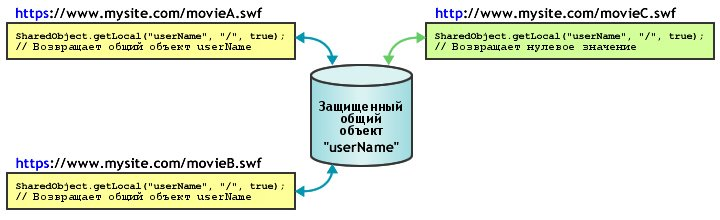

| Пакет | flash.net |
| Класс | public class SharedObject |
| Наследование | SharedObject |
| Язык версии: | ActionScript 3.0 |
| Версии среды выполнения: | AIR 1.0, Flash Player 9, Flash Lite 4 |
Используйте общие объекты для следующего:
-
Поддержка локального постоянства. Это самый простой способ применения общего объекта, не требующий Flash Media Server. Например, вызов
SharedObject.getLocal()поможет создать общий объект в приложении, предположим, калькулятор с памятью. Когда пользователь закрывает калькулятор, проигрыватель Flash Player сохраняет последнее значение в общем объекте на компьютере пользователя. При следующем запуске калькулятор будет содержать полученные ранее значения. В качестве альтернативы, если перед закрытием калькулятора вы установите для свойств общего объекта значениеnull, то при последующем запуске приложение откроется без каких-либо значений. Еще одним примером поддержки локальной устойчивости служит отслеживание предпочтений пользователя или других данных для крупного web-сайта, (например, какие статьи пользователь прочитал на новостном сайте). Отслеживание этой информации позволяет отображать прочитанные ранее статьи не так, как новые непрочитанные. Хранение этой информации на компьютере пользователя снижает нагрузку на сервер. -
Хранение и совместное использование данных на сервере Flash Media Server. Общий объект может хранить данные на сервере, откуда их смогут извлекать другие клиенты. Например, вызовите
SharedObject.getRemote(), чтобы создать удаленный общий объект, постоянно находящийся на сервере (например, список телефонов). Каждый раз, когда клиент вносит изменения в общий объект, исправленные данные становятся доступными всем клиентам, которые в данный момент подключены к объекту или которые подключаются к нему позднее. Если объект также имеет локальное постоянство, а клиент изменяет данные, но при этом не подключен к серверу, данные копируются в удаленный общий объект при последующем подключении пользователя к объекту. - Совместное использование данных в режиме реального времени. Общий объект может предоставить нескольким разным клиентам доступ к данным в режиме реального времени. Например, можно открыть удаленный общий объект, на котором хранится список пользователей, подключенных к дискуссионной группе, которую могут видеть все клиенты, подключенные к данному объекту. Когда пользователь входит или покидает дискуссионную группу, объект обновляется и все клиенты, подключенные к данному объекту, видят исправленный список пользователей дискуссионной группы.
Для создания локального общего объекта вызовите SharedObject.getLocal(). Для создания удаленного общего объекта вызовите SharedObject.getRemote().
При закрытии приложения общие объекты стираются или записываются на диск. Для явной записи данных на диск можно также вызвать метод flush().
Примечания по локальному дисковому пространству. Локальные общие объекты имеют определенные ограничения, которые следует обязательно учитывать при проектировании приложений. В некоторых случаях SWF-файлам запрещено записывать локальные общие объекты. Иногда данные, хранящиеся в локальных общих объектах, могут быть стерты без вашего ведома. Пользователи Flash Player могут управлять дисковым пространством, доступным отдельным доменам или всем доменам. Когда пользователи уменьшают объем доступного дискового пространства, некоторые локальные общие объекты могут быть удалены. Пользователи Flash Player также снабжены элементами управления конфиденциальностью, которые могут запретить сторонним доменам (другим доменам, отличным от домена, указанного в текущий момент в адресной строке обозревателя) чтение или запись локальных общих объектов. Обратите внимание, что начиная с версии 3.3 в Mac OS изменилось расположение локальных объектов общего доступа. При обновлении до пространства имен 3.3 может показаться, что объекты утеряны.
Примечание. SWF-файлы, хранящиеся и запускаемые не на удаленном сервера, а на локальном компьютере, всегда могут записывать на диск сторонние общие объекты. Дополнительные сведения о сторонних общих объектах см. на панели Global Storage Settings в справочной системе Flash Player.
Рекомендуется проверять наличие сбоев, связанных с объемом дискового пространства и настройками конфиденциальности пользователей. Выполняйте данные проверки при вызове getLocal() и flush():
-
SharedObject.getLocal()— если вызов этого метода приводит к сбою, проигрыватель Flash Player создает исключение. Сбой может произойти, если пользователь отключил сторонние общие объекты, а домен SWF-файла не совпадает с доменом в адресной строке обозревателя. -
SharedObject.flush()— при неудачном вызове данного метода проигрыватель Flash Player создает исключение. При успешном вызове он возвращаетSharedObjectFlushStatus.FLUSHED. Если требуется дополнительное дисковое пространство, он возвращает значениеSharedObjectFlushStatus.PENDING. Пользователь Flash Player получает предупреждение о необходимости увеличить доступное пространство для локально сохраняемой информации. Соответственно, событиеnetStatusотправляется с информационным объектом, указывающим на сбой или успех проведенной очистки.
При попытке SWF-файла создать или модифицировать локальные общие объекты следует убедиться в том, что ширина этого SWF-файла составляет не менее 215 пикселей, а высота — не менее 138 пикселей (это минимальные размеры для отображения диалогового окна, предупреждающего пользователя о необходимости увеличить место для хранения локальных общих объектов). Если данный SWF-файл меньше указанных размеров, но при этом увеличение пространства для хранения все же требуется, происходит сбой SharedObject.flush(), после которого возвращается значение SharedObjectFlushedStatus.PENDING и отправляется событие netStatus.
Удаленные общие объекты. При работе с Flash Media Server можно создавать и применять удаленные общие объекты, которые совместно используются в режиме реального времени всеми клиентами, подключенными к вашему приложению. Если какой-либо клиент изменяет свойство удаленного общего объекта, то данное свойство меняется для всех подключенных клиентов. Удаленные общие объекты можно использовать для синхронизации клиентов (например, игроков в многопользовательской игре).
Каждый удаленный общий объект имеет свойство data, которое представляет собой объект со свойствами, в которых хранятся данные. Чтобы изменить свойство объекта данных, вызовите setProperty(). Сервер обновляет свойства, создает событие sync и отправляет свойства обратно подключенным клиентам.
Удаленным общим объектам можно задать постоянство: на клиенте, на сервере или сразу на обоих объектах. По умолчанию проигрыватель Flash Player сохраняет постоянные локальные общие объекты удаленного типа, размер которых не превышает 100 килобайт. При сохранении более крупного объекта Flash Player отображает диалоговое окно «Локальное хранение», в котором пользователь может разрешить или запретить локальное хранение общего объекта. Убедитесь в том, что габаритные размеры используемой рабочей области составляют не менее 215х138 пикселей. Это минимальный размер, необходимый Flash для отображения диалогового окна.
Если пользователь выбирает параметр Allow, сервер сохраняет общий объект и отправляет событие netStatus со свойством code, имеющим значение SharedObject.Flush.Success. Если пользователь выбирает параметр Deny, сервер сохраняет общий объект и отправляет событие netStatus со свойством code, имеющим значение SharedObject.Flush.Failed.
Связанные элементы API
 Скрыть унаследованные общедоступные свойства
Скрыть унаследованные общедоступные свойства Показать унаследованные общедоступные свойства
Показать унаследованные общедоступные свойства| Свойство | Определено | ||
|---|---|---|---|
| client : Object
Указывает объект, для которого вызываются методы ответного вызова. | SharedObject | ||
 | constructor : Object
Ссылка на объект класса или функцию конструктора для данного экземпляра объекта. | Object | |
| data : Object [только для чтения]
Сборник атрибутов, связанных со свойством data объекта. Эти атрибуты можно совместно использовать и сохранять. | SharedObject | ||
| defaultObjectEncoding : uint [статические]
Кодировка объекта по умолчанию (версия AMF) для всех локальных общих объектов, созданных в SWF-файле. | SharedObject | ||
| fps : Number [только для записи]
Определяет, сколько раз в секунду изменения общего объекта, внесенные клиентом, отправляются на сервер. | SharedObject | ||
| objectEncoding : uint
Кодировка объекта (версия AMF) для данного общего объекта. | SharedObject | ||
| preventBackup : Boolean [статические]
Указывает, будет ли выполняться резервное копирование локальных общих объектов в облачной службе резервного копирования iOS. | SharedObject | ||
| size : uint [только для чтения]
Текущий размер общего объекта (в байтах). | SharedObject | ||
| Метод | Определено | ||
|---|---|---|---|
| addEventListener(type:String, listener:Function, useCapture:Boolean = false, priority:int = 0, useWeakReference:Boolean = false):void
Регистрирует объект прослушивателя события на объекте EventDispatcher для получения прослушивателем уведомления о событии. | EventDispatcher | |
Удаляет все данные и удаляет общий объект с диска для локальных общих объектов. | SharedObject | ||
Закрывает подключение между удаленным общим объектом и сервером. | SharedObject | ||
Подключается к удаленному общему объекту на сервере с помощью указанного объекта NetConnection. | SharedObject | ||
|
Посылает событие в поток событий. | EventDispatcher | |
Немедленно записывает постоянный локальный общий объект в локальный файл. | SharedObject | ||
[статические]
Возвращает ссылку на постоянный локальный общий объект, доступный только для текущего клиента. | SharedObject | ||
getRemote(name:String, remotePath:String = null, persistence:Object = false, secure:Boolean = false):SharedObject [статические]
Возвращает ссылку на общий объект на сервере Flash Media Server, доступный нескольким клиентам. | SharedObject | ||
|
Проверяет, имеет ли объект EventDispatcher прослушиватели, зарегистрированные для определенного типа события. | EventDispatcher | |
|
Показывает, определено ли заданное свойство для объекта. | Object | |
|
Показывает, есть ли экземпляр класса Object в цепи прототипов объекта, заданного в качестве параметра. | Object | |
|
Показывает наличие заданного свойства и его перечисляемость. | Object | |
|
Удаляет прослушиватель из объекта EventDispatcher. | EventDispatcher | |
Транслирует сообщение всем клиентам, подключенным к удаленному общему объекту (включая клиента, отправляющего сообщение). | SharedObject | ||
Указывает серверу, что значение свойства в общем объекте было изменено. | SharedObject | ||
Обновляет значение свойства в общем объекте и указывает серверу, что значение свойства было изменено. | SharedObject | ||
|
Задает доступность динамического свойства для операций цикла. | Object | |
|
Возвращает строковое представление этого объекта, отформатированного в соответствии со стандартами, принятыми для данной локали. | Object | |
|
Возвращает строковое представление заданного объекта. | Object | |
|
Возвращает элементарное значение заданного объекта. | Object | |
|
Проверяет, зарегистрирован ли прослушиватель события для указанного типа события с данным объектом EventDispatcher или любым его предшественником. | EventDispatcher | |
| Событие | Сводка | Определено | ||
|---|---|---|---|---|
| [многоадресное событие] Отправляется, когда проигрыватель Flash Player или приложение AIR перемещается в фокус операционной системы и становится активным. | EventDispatcher | ||
| Отправляется, когда исключение создается асинхронным образом — то есть в коде, изначально имеющем асинхронную природу. | SharedObject | |||
| [многоадресное событие] Отправляется, когда проигрыватель Flash Player или приложение AIR теряет фокус системы и становится неактивным. | EventDispatcher | ||
| Отправляется, когда экземпляр SharedObject сообщает о своем состоянии или о случившейся ошибке. | SharedObject | |||
| Отправляется, когда удаленный общий объект обновляется сервером. | SharedObject | |||
client | свойство |
client:Object| Язык версии: | ActionScript 3.0 |
| Версии среды выполнения: | AIR 1.0, Flash Player 9, Flash Lite 4 |
Указывает объект, для которого вызываются методы ответного вызова. Объект по умолчанию: this. Если в свойстве client указать другой объект, методы обратного вызова будут вызываться на этом другом объекте.
Реализация
public function get client():Object public function set client(value:Object):voidВыдает
TypeError — В качестве свойства client должен быть указан объект, имеющий значение, отличное от null.
|
data | свойство |
data:Object [только для чтения] | Язык версии: | ActionScript 3.0 |
| Версии среды выполнения: | AIR 1.0, Flash Player 9, Flash Lite 4 |
Сборник атрибутов, связанных со свойством data объекта. Эти атрибуты можно совместно использовать и сохранять. Каждый атрибут может быть объектом любого типа ActionScript или JavaScript — массивом, числом, логическим значением, ByteArray, XML и т.п. Например, в следующих строках присваиваются значения различным аспектам общего объекта:
var items_array:Array = new Array(101, 346, 483);
var currentUserIsAdmin:Boolean = true;
var currentUserName:String = "Ramona";
var my_so:SharedObject = SharedObject.getLocal("superfoo");
my_so.data.itemNumbers = items_array;
my_so.data.adminPrivileges = currentUserIsAdmin;
my_so.data.userName = currentUserName;
for (var prop in my_so.data) {
trace(prop+": "+my_so.data[prop]);
}
Все атрибуты свойства data общего объекта сохраняются, если объект обладает постоянством, при этом данный общий объект содержит следующую информацию:
userName: Ramona
adminPrivileges: true
itemNumbers: 101,346,483
Примечание. Не следует присваивать значения непосредственно свойству data общего объекта, например so.data = someValue, так как проигрыватель Flash Player игнорирует подобное присвоение.
Чтобы удалить атрибуты для локальных общих объектов, используйте код delete so.data.attributeName, так как установка значения null или undefined для атрибута локального общего объекта не приводит к удалению самого атрибута.
Чтобы создать значения private (значения, доступные только экземпляру клиента в процессе использования объекта и не сохраняемые при закрытии объекта) для общего объекта, создайте свойства, не называя их data, и сохраните их, как показано в следующем примере:
var my_so:SharedObject = SharedObject.getLocal("superfoo");
my_so.favoriteColor = "blue";
my_so.favoriteNightClub = "The Bluenote Tavern";
my_so.favoriteSong = "My World is Blue";
for (var prop in my_so) {
trace(prop+": "+my_so[prop]);
}
Общий объект содержит следующие данные:
favoriteSong: My World is Blue
favoriteNightClub: The Bluenote Tavern
favoriteColor: blue
data: [object Object]
Для удаленных общих объектов, используемых при работе с сервером, все атрибуты свойства data доступны всем клиентам, подключенным к общему объекту. При этом все атрибуты сохраняются, если объект обладает постоянством. Если один из клиентов изменит значение атрибута, то новое значение будет видно всем клиентам.
Реализация
public function get data():ObjectСвязанные элементы API
defaultObjectEncoding | свойство |
defaultObjectEncoding:uint| Язык версии: | ActionScript 3.0 |
| Версии среды выполнения: | AIR 1.0, Flash Player 9, Flash Lite 4 |
Кодировка объекта по умолчанию (версия AMF) для всех локальных общих объектов, созданных в SWF-файле. Когда локальные общие объекты записываются на диск, свойство SharedObject.defaultObjectEncoding указывает необходимую версию формата Action Message Format: ActionScript 3.0 (AMF3), ActionScript 1.0 или 2.0 (AMF0).
Дополнительные сведения о кодировке объекта, включая различие между кодировкой в локальных и удаленных общих объектах, см. в описании свойства objectEncoding.
Значение SharedObject.defaultObjectEncoding по умолчанию: использование формата ActionScript 3.0 (AMF3). При необходимости записать локальные общие объекты, которые смогут быть прочитаны SWF-файлами ActionScript 2.0 или 1.0, настройте SharedObject.defaultObjectEncoding на использование формата ActionScript 1.0 или ActionScript 2.0, flash.net.ObjectEncoding.AMF0 (в начале сценария) до непосредственного создания таких объектов. Все локальные общие объекты, созданные после этого, будут использовать кодировку AMF0 и смогут взаимодействовать с более старым содержимым. После создания локальных общих объектов вы не сможете изменить значение objectEncoding существующих локальных общих объектов путем задания параметра SharedObject.defaultObjectEncoding.
Чтобы установить кодировку не для всех общих объектов, созданных SWF-файлов, а для отдельных объектов, установите свойство objectEncoding локального общего объекта.
Реализация
public static function get defaultObjectEncoding():uint public static function set defaultObjectEncoding(value:uint):voidСвязанные элементы API
fps | свойство |
fps:Number [только для записи] | Язык версии: | ActionScript 3.0 |
| Версии среды выполнения: | AIR 1.0, Flash Player 9, Flash Lite 4 |
Определяет, сколько раз в секунду изменения общего объекта, внесенные клиентом, отправляются на сервер.
Используйте этот метод при необходимости управлять объемом данных, перемещаемых между клиентом и сервером. Например, если соединение между клиентом и сервером характеризуется относительно медленной скоростью, может потребоваться установить для параметра fps более низкое значение. И наоборот, если клиент подключен к многопользовательскому приложению, в котором важен расчет времени, можно установить для fps относительно высокое значение.
Настройка параметра fps приведет к появлению события sync и обновит все изменения на сервере. Если только требуется вручную обновить сервер, установите для fps значение 0.
Изменения не отправляются на сервер до тех пор, пока не будет отправлено событие sync. Другими словами, если время реагирования сервера слишком мало, обновления могут отправляться на сервер с меньшей частотой, чем значение, указанное в данном свойстве.
Реализация
public function set fps(value:Number):voidobjectEncoding | свойство |
objectEncoding:uint| Язык версии: | ActionScript 3.0 |
| Версии среды выполнения: | AIR 1.0, Flash Player 9, Flash Lite 4 |
Кодировка объекта (версия AMF) для данного общего объекта. Когда локальный общий объект записывается на диск, свойство objectEncoding указывает необходимую версию формата Action Message Format: ActionScript 3.0 (AMF3), ActionScript 1.0 или 2.0 (AMF0).
Кодировка объекта обрабатывается в зависимости от типа общего объекта (локальный или удаленный).
- Локальные общие объекты. Вы можете получить или установить значение свойства
objectEncodingдля локальных общих объектов. ЗначениеobjectEncodingвлияет на то, какое форматирование используется для записи данного локального общего объекта. Если этот локальный общий объект должен считываться SWF-файлами ActionScript 2.0 или 1.0, установите дляobjectEncodingзначениеObjectEncoding.AMF0. Даже если запись должна вестись в кодировке объекта AMF3, проигрыватель Flash Player все равно способен считывать локальные общие объекты в кодировке AMF0. Другими словами, если используется значение данного свойства по умолчанию (ObjectEncoding.AMF3), SWF-файл все равно сможет считывать общие объекты, созданные SWF-файлами в формате ActionScript 2.0 или 1.0. - Удаленные общие объекты. При подключении к серверу удаленный общий объект наследует его параметр
objectEncodingот связанного экземпляра NetConnection (экземпляра, используемого для подключения к удаленному общему объекту). При отсутствии подключения к серверу удаленный общий объект наследует параметрdefaultObjectEncodingот соответствующего экземпляра NetConnection. Поскольку значение свойстваobjectEncodingудаленного общего объекта определяется экземпляром NetConnection, для удаленных общих объектов это свойство является доступным только для чтения.
Реализация
public function get objectEncoding():uint public function set objectEncoding(value:uint):voidВыдает
ReferenceError — Произведена попытка установить значение свойства objectEncoding на удаленном общему объекте. Для удаленных общих объектов это свойство доступно только для чтения, так как его значение определяется соответствующим экземпляром NetConnection.
|
Связанные элементы API
preventBackup | свойство |
preventBackup:Boolean| Язык версии: | ActionScript 3.0 |
| Версии среды выполнения: | AIR 3.7 |
Указывает, будет ли выполняться резервное копирование локальных общих объектов в облачной службе резервного копирования iOS.
Укажите значение true или false:
- true: предотвращает резервное копирование всех локальных общих объектов в облачной службе iOS.
- false (по умолчанию): выполняется резервное копирование локальных общих объектов в облачной службе iOS.
Это свойство применяется только к локальным общим объектам и только для ОС iOS.
Реализация
public static function get preventBackup():Boolean public static function set preventBackup(value:Boolean):voidsize | свойство |
size:uint [только для чтения] | Язык версии: | ActionScript 3.0 |
| Версии среды выполнения: | AIR 1.0, Flash Player 9, Flash Lite 4 |
Текущий размер общего объекта (в байтах).
Flash вычисляет размер общего объекта, просматривая свойства всех его данных. Чем больше свойств данных содержит объект, тем больше времени требуется для вычисления размера. Анализ размера объекта может занять существенный объем ресурсов, поэтому этот метод следует использовать только в случае особой необходимости.
Реализация
public function get size():uintПример ( Использование этого примера )
thehobbit. Свойство username добавляется в свойство данных объекта SharedObject. Затем отслеживается свойство size, в результате чего возвращается указанное значение.
import flash.net.SharedObject;
// if these get copied or not
var mySo:SharedObject = SharedObject.getLocal("thehobbit");
mySo.data.username = "bilbobaggins";
trace(mySo.size); // 55
clear | () | метод |
public function clear():void| Язык версии: | ActionScript 3.0 |
| Версии среды выполнения: | AIR 1.0, Flash Player 9, Flash Lite 4 |
Удаляет все данные и удаляет общий объект с диска для локальных общих объектов. Ссылка на общий объект все еще активна, однако его свойства data удалены.
Для удаленных общих объектов, используемых при работе с Flash Media Server, метод clear() отключает объект и стирает все его данные. Если общий объект характеризуется локальным постоянством, данный метод также удаляет этот объект с диска. Ссылка на общий объект все еще активна, однако его свойства data удалены.
Пример ( Использование этого примера )
hostName. Свойство username добавляется в свойство данных объекта SharedObject. Наконец вызывается метод clear(), который стирает всю информацию, добавленную в объект данных (в данном случае было только одно свойство username).
package {
import flash.net.SharedObject;
public class SharedObject_clear {
private var hostName:String = "yourDomain";
private var username:String = "yourUsername";
public function SharedObject_clear() {
var mySo:SharedObject = SharedObject.getLocal(hostName);
if(mySo.data.username == null) {
mySo.data.username = username;
trace("set: " + mySo.data.username); // yourUsername
}
else {
mySo.clear();
trace("cleared: " + mySo.data.username); // undefined
}
}
}
}
close | () | метод |
public function close():void| Язык версии: | ActionScript 3.0 |
| Версии среды выполнения: | AIR 1.0, Flash Player 9, Flash Lite 4 |
Закрывает подключение между удаленным общим объектом и сервером. Если удаленный общий объект имеет локальное постоянство, то после вызова данного метода пользователь сможет вносить изменения в локальную копию объекта. Любые изменения, внесенные в локальный объект, отправляются на сервер при следующем подключении пользователя к удаленному общему объекту.
connect | () | метод |
public function connect(myConnection:NetConnection, params:String = null):void| Язык версии: | ActionScript 3.0 |
| Версии среды выполнения: | AIR 1.0, Flash Player 9, Flash Lite 4 |
Подключается к удаленному общему объекту на сервере с помощью указанного объекта NetConnection. Используйте данный метод после вызова getRemote(). При успешном подключении отправляется событие sync.
Перед тем как перейти к работе с удаленным общим объектом, прежде всего проверьте его на наличие ошибок с помощью оператора try..catch..finally. Перед тем как вносить какие-либо изменения в общий объект, необходимо прослушать и обработать событие sync. Любые изменения, внесенные локально до отправки события sync, могут быть потеряны.
Чтобы подключиться к удаленному общему объекту, вызовите метод connect(), например:
var myRemoteSO:SharedObject = SharedObject.getRemote("mo", myNC.uri, false);
myRemoteSO.connect(myNC);
Параметры
myConnection:NetConnection — Объект NetConnection, использующий протокол RTMP (например, объект NetConnection, применяемый для обмена данными с сервером Flash Media Server).
| |
params:String (default = null) |
Выдает
Error — Проигрыватель Flash Player не смог подключиться к указанному удаленному общему объекту. Убедитесь в том, что экземпляр NetConnection действует и подключен, а также что на сервере был успешно создан удаленный общий объект.
|
Связанные элементы API
flush | () | метод |
public function flush(minDiskSpace:int = 0):String| Язык версии: | ActionScript 3.0 |
| Версии среды выполнения: | AIR 1.0, Flash Player 9, Flash Lite 4 |
Немедленно записывает постоянный локальный общий объект в локальный файл. Если вы не используете данный метод, проигрыватель Flash Player записывает общий объект в файл по окончании соответствующего сеанса: когда SWF-файл закрывается, когда общий объект попадает в мусор, так как на него больше ничто не ссылается, а также когда вы вызываете SharedObject.clear() или SharedObject.close().
Если данный метод возвращает значение SharedObjectFlushStatus.PENDING, проигрыватель Flash Player отображает диалоговое окно, предлагающее пользователю увеличить объем дискового пространства, доступный для объектов из этого домена. Чтобы открыть пространство для роста общего объекта при его сохранении в будущем, что позволит избежать возвращенных значений PENDING, передайте значение для параметра minDiskSpace. При попытке записать файл проигрыватель Flash Player не проверяет наличие достаточного места для сохранения общего объекта в его текущем размере, а выясняет число байтов, переданных minDiskSpace.
Например, если вы предполагаете, что при росте максимальный размер общего объекта составит 500 байтов (хотя в начале он будет намного меньшим), установите для minDiskSpace значение 500. Когда Flash запрашивает у пользователя возможность выделить дисковое пространство для общего объекта, объем запроса составляет 500 байт. После того как пользователь выделяет требуемый объем пространства, Flash больше не запрашивает дополнительное пространство в последующих попытках очистки объекта (его размер при этом не должен превышать 500 байт).
Данный метод вызывается снова после того, как пользователь отреагирует на диалоговое окно. Событие netStatus отправляется со свойством code, имеющим значение SharedObject.Flush.Success или SharedObject.Flush.Failed.
Параметры
minDiskSpace:int (default = 0) |
String — Одно из следующих значений:
|
Выдает
Error — Проигрыватель Flash Player не может записать общий объект на диске. Эта ошибка может возникнуть, если пользователь навсегда запретил локальное хранение информации для объектов из этого домена.
Примечание. Локальное содержимое всегда может записывать на диск общие объекты из сторонних доменов (доменов, отличных от домена, указанного в данный момент в адресной строке обозревателя), даже если запись сторонних общих объектов на диск запрещена. |
Связанные элементы API
Пример ( Использование этого примера )
hostName. Свойство username добавляется в свойство данных объекта SharedObject. Затем вызывается метод flush(), сопровождаемый проверкой того, был ли возврат строки pending или логического значения true или false. Необходимо помнить, что все открытые экземпляры SharedObject будут автоматически стерты при закрытии текущего экземпляра проигрывателя Flash Player.
package {
import flash.net.SharedObject;
public class SharedObject_flush {
private var hostName:String = "yourDomain";
private var username:String = "yourUsername";
public function SharedObject_flush() {
var mySo:SharedObject = SharedObject.getLocal(hostName);
mySo.data.username = username;
var flushResult:Object = mySo.flush();
trace("flushResult: " + flushResult);
trace(mySo.data.username); // yourUsername
}
}
}
getLocal | () | метод |
public static function getLocal(name:String, localPath:String = null, secure:Boolean = false):SharedObject| Язык версии: | ActionScript 3.0 |
| Версии среды выполнения: | AIR 1.0, Flash Player 9, Flash Lite 4 |
Возвращает ссылку на постоянный локальный общий объект, доступный только для текущего клиента. Данный метод создает общий объект, если таковой не существовал ранее. Если любые значения, переданные методу getLocal(), являются недопустимыми или вызов завершился сбоем, Flash Player создает соответствующее исключение.
В представленном коде показано, как присвоить переменной возвращенную ссылку на общий объект:
var so:SharedObject = SharedObject.getLocal("savedData");
Примечание. Если пользователь запретил локальное хранение для данного домена, объект не будет сохраняться локально, даже если определено значение для параметра localPath. Исключением для данного правила является локальное содержимое. Локальное содержимое всегда может записывать на диск общие объекты из сторонних доменов (доменов, отличающихся от домена, указанного в данный момент в адресной строке обозревателя), даже если запись сторонних общих объектов на диск запрещена.
Чтобы избежать конфликта имен, проигрыватель Flash отслеживает место размещения SWF-файла, создающего общий объект. Например, если SWF-файл на сайте www.myCompany.com/apps/stockwatcher.swf создает общий объект portfolio, то данный общий объект не конфликтует с другим объектом portfolio, который был создан SWF-файлом на сайте www.yourCompany.com/photoshoot.swf, так как эти SWF-файлы находятся в разных каталогах.
Несмотря на то, что параметр localPath не является обязательным, ему можно найти применение, особенно в тех случаях, когда доступ к общему объекту требуется и другим SWF-файлам. Если данные в общем объекте специфичны для одного SWF-файла, который не будет перемещен в другое место, то целесообразнее использовать значение по умолчанию. Если доступ к общему объекту нужен другим SWF-файлам или если SWF-файл, создающий общий объект, будет впоследствии перемещен, то значение этого параметра определенно влияет на доступность общего объекта. Например, если вы создадите общий объект, у которого параметр localPath будет иметь значение по умолчанию (полный путь к SWF-файлу), то данный общий объект будет недоступен каким-либо другим SWF-файлам. Если вы позднее переместите исходный SWF-файл в другое место, то даже этому SWF-файлу не будут доступны данные, которые уже были сохранены в общем объекте.
Чтобы избежать непреднамеренного ограничения доступа к общему объекту, используйте параметр localpath. Наиболее демократичный подход заключается в установке localPath со значением / (косая черта). В этом случае общий объект становится доступным всем SWF-файлам в домене, но при этом увеличивается вероятность возникновения конфликтов имен с другими общими объектами в домене. При подходе ограничивающего характера в localPath добавляются имена папок, представляющих полный путь к SWF-файлу. Например, для общего объекта portfolio, созданного SWF-файлом по адресу www.myCompany.com/apps/stockwatcher.swf, можно установить параметр localPath со значением /, /apps или /apps/stockwatcher.swf. Следует определить, какой подход обеспечивает оптимальную гибкость для вашего приложения.
При использовании данного метода необходимо учесть следующую модель безопасности:
- Доступ к общим объектам через границы изолированных программных сред запрещен.
- Пользователи могут ограничить доступ к общим объектам с помощью диалогового окна Flash Player Settings или диспетчера настроек. По умолчанию приложение может создавать общие объекты размером до 100 килобайт данных на один домен. Администраторы и пользователи также могут устанавливать ограничения на возможность записи данных в файловой системе.
Предположим, вы публикуете содержимое SWF-файла, которое должно воспроизводиться как локальные файлы (локально установленные SWF-файлы или EXE-файлы). При этом вам необходимо, чтобы определенный общий объект был доступен для нескольких локальных SWF-файлов. В этой ситуации не забудьте, что для хранения локальных общих объектов могут использоваться два разных места. Выбор используемого домена зависит от разрешений безопасности, предоставленных локальному файлу, который создал общий объект. Локальные файлы могут иметь три разных уровня полномочий (разрешений):
- Предоставлен доступ только к локальной файловой системе.
- Предоставлен доступ только к сети.
- Предоставлен доступ как к сети, так и локальной файловой системе.
Локальные файлы, имеющие доступ к локальной файловой системе (уровень 1 или 3), хранят свои общие объекты в одном месте. Локальные файлы, не имеющие доступа к локальной файловой системе (2 уровень), хранят свои общие объекты в другом месте.
Можно запретить использование SWF-файлом этого метода путем установки параметра allowNetworking для тегов object и embed на странице HTML, содержащей SWF-содержимое.
Для получения дополнительной информации см. раздел центра разработчиков Flash Player Безопасность.
Параметры
name:String — Имя объекта. Имена могут содержать косые черты (/); например, work/addresses является допустимым именем. Имя общего объекта не может содержать пробелы или следующие символы:
~ % & \ ; : " ' , < > ? # | |
localPath:String (default = null) | |
secure:Boolean (default = false)
Если ваш SWF-файл доставляется через подключение, не использующее протокол HTTPS, и вы пытаетесь установить для данного параметра значение На следующей схеме показано, как используется параметр  |
SharedObject — Ссылка на локальный постоянный общий объект, доступный только для текущего клиента. Если проигрыватель Flash Player не может создать или найти общий объект (например, если localPath указывает на несуществующий каталог), данный метод создает исключение.
|
Выдает
Error — Проигрыватель Flash Player не может создавать общие объекты без какой-либо причины. Данная ошибка может возникнуть, если запрещено создание и хранение постоянных общих объектов содержимым Flash сторонних разработчиков (это не относится к локальному содержимому). Пользователи могут запретить использование постоянных общих объектов сторонних разработчиков на панели Global Storage Settings в диспетчере настроек по адресу http://www.adobe.com/support/documentation/en/flashplayer/help/settings_manager03.html.
|
getRemote | () | метод |
public static function getRemote(name:String, remotePath:String = null, persistence:Object = false, secure:Boolean = false):SharedObject| Язык версии: | ActionScript 3.0 |
| Версии среды выполнения: | AIR 1.0, Flash Player 9, Flash Lite 4 |
Возвращает ссылку на общий объект на сервере Flash Media Server, доступный нескольким клиентам. Данный метод создает удаленный общий объект, если таковой не существовал ранее.
Чтобы создать удаленный общий объект, вызовите getRemote(), а затем connect() для подключения удаленного объекта к серверу, как в следующем примере:
var nc:NetConnection = new NetConnection();
nc.connect("rtmp://somedomain.com/applicationName");
var myRemoteSO:SharedObject = SharedObject.getRemote("mo", nc.uri, false);
myRemoteSO.connect(nc);
Чтобы убедиться в том, что локальная и удаленная копии общего объекта синхронизированы, следует прослушать и обработать событие sync. Все клиенты, которые хотят совместно использовать этот объект, должны передать одинаковые значения для параметров name и remotePath.
Чтобы создать общий объект, который будет доступен только текущему клиенту, используйте метод SharedObject.getLocal().
Параметры
name:String — Имя удаленного общего объекта. Имена могут содержать косую черту (/); например, work/addresses является допустимым именем. Имя общего объекта не может содержать пробелы или следующие символы:
~ % & \ ; : " ' , > ? ? # | |
remotePath:String (default = null)connect().
| |
persistence:Object (default = false)
Примечание. Если пользователь запретил локальное хранение для данного домена, объект не будет сохраняться локально, даже если будет указан постоянный локальный путь. Дополнительные сведения см. в описании класса. | |
secure:Boolean (default = false)secure в записи метода getLocal.
|
SharedObject — Ссылка на объект, который может совместно использоваться разными клиентами.
|
Выдает
Error — Проигрыватель Flash Player не может создать или найти общий объект. Это могло произойти, если для параметров remotePath и persistence были указаны несуществующие пути.
|
Связанные элементы API
send | () | метод |
public function send(... arguments):void| Язык версии: | ActionScript 3.0 |
| Версии среды выполнения: | AIR 1.0, Flash Player 9, Flash Lite 4 |
Транслирует сообщение всем клиентам, подключенным к удаленному общему объекту (включая клиента, отправляющего сообщение). Чтобы обработать и отреагировать на данное сообщение, вызовите функцию обратного вызова, прикрепленную к общему объекту.
Параметры
... arguments — Один или несколько аргументов: строка, определяющая сообщение, имя одной или нескольких функций обработчика, прикрепляемых к общему объекту, а также необязательные параметры любого типа. Имя обработчика должно быть исключительно одноуровневым (то есть форма «родительский/дочерний элемент» не используется) и связанным с общим объектом. Аргументы сериализуются и отправляются посредством подключения, при этом принимающий обработчик получает их в том же самом порядке. Если параметр представляет собой объект круглой формы (например, связанный в круглую форму список), сериализатор обрабатывает ссылки надлежащим образом.
Примечание. Не используйте в качестве имени функции какой-либо зарезервированный термин. Например, использование |
setDirty | () | метод |
public function setDirty(propertyName:String):void| Язык версии: | ActionScript 3.0 |
| Версии среды выполнения: | AIR 1.0, Flash Player 9, Flash Lite 4 |
Указывает серверу, что значение свойства в общем объекте было изменено. Данный метод помечает свойства флагом изменения dirty.
Вызовите SharedObject.setProperty(), чтобы создать свойства общего объекта.
Метод SharedObject.setProperty() реализует setDirty(). В большинстве случаев, например, когда значение свойства представлено примитивным типом (строка или число), вместо setDirty() можно вызвать setProperty(). Однако если значением свойства является объект, содержащий свои собственные свойства, вызовите setDirty(), чтобы указать, когда значение изменяется в рамках объекта.
Параметры
propertyName:String — Имя изменившегося свойства.
|
Связанные элементы API
setProperty | () | метод |
public function setProperty(propertyName:String, value:Object = null):void| Язык версии: | ActionScript 3.0 |
| Версии среды выполнения: | AIR 1.0, Flash Player 9, Flash Lite 4 |
Обновляет значение свойства в общем объекте и указывает серверу, что значение свойства было изменено. Метод setProperty() явно отмечает свойства как измененные или имеющие не сохраненные данные.
Дополнительные сведения об удаленных общих объектах см. в документации Flash Media Server.
Примечание. Метод SharedObject.setProperty() реализует метод setDirty(). В большинстве случаев, например, когда значение свойства представлено примитивным типом (строка или число), вместо setDirty() можно вызвать setProperty(). Однако если значением свойства является объект, содержащий свои собственные свойства, используйте setDirty(), чтобы указать, когда значение изменяется в рамках объекта. Вообще, рекомендуется вместо setDirty() вызывать setProperty(), так как setProperty() обновляет значение свойства только при изменении этого значения, в то время как setDirty() принудительно выполняет синхронизацию на всех подписанных клиентах.
Параметры
propertyName:String — Имя свойства в общем объекте.
| |
value:Object (default = null)null, чтобы удалить свойство.
|
Связанные элементы API
asyncError | Событие |
flash.events.AsyncErrorEventсвойство AsyncErrorEvent.type =
flash.events.AsyncErrorEvent.ASYNC_ERROR| Язык версии: | ActionScript 3.0 |
| Версии среды выполнения: | AIR 1.0, Flash Player 9, Flash Lite 4 |
Отправляется, когда исключение создается асинхронным образом, то есть в коде, изначально имеющем асинхронную природу.
КонстантаAsyncErrorEvent.ASYNC_ERROR определяет значение свойства type объекта события asyncError.
Это событие имеет следующие свойства:
| Свойство | Значение |
|---|---|
bubbles | false |
cancelable | false; поведение по умолчанию, подлежащее отмене, не определено. |
currentTarget | Объект, активно обрабатывающий объект Event с помощью прослушивателя событий. |
target | Объект, отправляющий событие. |
error | Ошибка, запускаемая событием. |
netStatus | Событие |
flash.events.NetStatusEventсвойство NetStatusEvent.type =
flash.events.NetStatusEvent.NET_STATUS| Язык версии: | ActionScript 3.0 |
| Версии среды выполнения: | AIR 1.0, Flash Player 9, Flash Lite 4 |
Отправляется, когда экземпляр SharedObject сообщает о своем состоянии или о случившейся ошибке. Событие netStatus содержит свойство info, представляющее собой информационный объект, в котором размещаются специфические сведения о событии: успешность попытки подключения или успешность записи общего объекта на локальный диск.
type для объекта события netStatus.
Это событие имеет следующие свойства:
| Свойство | Значение |
|---|---|
bubbles | false |
cancelable | false; поведение по умолчанию, подлежащее отмене, не определено. |
currentTarget | Объект, активно обрабатывающий объект Event с помощью прослушивателя событий. |
info | Объект со свойствами, описывающими состояние объекта или условие ошибки. |
target | Объект NetConnection или NetStream, сообщающий свое состояние. |
Связанные элементы API
sync | Событие |
flash.events.SyncEventсвойство SyncEvent.type =
flash.events.SyncEvent.SYNC| Язык версии: | ActionScript 3.0 |
| Версии среды выполнения: | AIR 1.0, Flash Player 9, Flash Lite 4 |
Отправляется, когда удаленный общий объект обновляется сервером.
Задает значение свойстваtype для объекта события sync.
Это событие имеет следующие свойства:
| Свойство | Значение |
|---|---|
bubbles | false |
cancelable | false; поведение по умолчанию, подлежащее отмене, не определено. |
currentTarget | Объект, активно обрабатывающий объект Event с помощью прослушивателя событий. |
changeList | Массив со свойствами, описывающими его состояние |
target | Экземпляр SharedObject, обновленный сервером. |
Связанные элементы API
application-name. Когда пользователь нажимает кнопку «Сохранить», метод saveValue() пытается сохранить свойство savedValue в свойстве data объекта SharedObject. Если Flash Player должен запросить разрешение на сохранение данных, то в тот момент, когда пользователь дает или не дает разрешение, вызывается метод onFlushStatus(). Когда нажимается кнопка «Очистить», метод clearValue() удаляет значение, сохраненное в параметре savedValue. При последующей загрузке SWF-файла извлекается значение undefined.
package {
import flash.display.Sprite;
import flash.events.MouseEvent;
import flash.events.NetStatusEvent;
import flash.net.SharedObject;
import flash.net.SharedObjectFlushStatus;
import flash.text.TextField;
import flash.text.TextFieldAutoSize;
import flash.text.TextFieldType;
public class SharedObjectExample extends Sprite {
private var mySo:SharedObject;
public function SharedObjectExample() {
buildUI();
saveBtn.addEventListener(MouseEvent.CLICK, saveValue);
clearBtn.addEventListener(MouseEvent.CLICK, clearValue);
mySo = SharedObject.getLocal("application-name");
output.appendText("SharedObject loaded...\n");
output.appendText("loaded value: " + mySo.data.savedValue + "\n\n");
}
private function saveValue(event:MouseEvent):void {
output.appendText("saving value...\n");
mySo.data.savedValue = input.text;
var flushStatus:String = null;
try {
flushStatus = mySo.flush(10000);
} catch (error:Error) {
output.appendText("Error...Could not write SharedObject to disk\n");
}
if (flushStatus != null) {
switch (flushStatus) {
case SharedObjectFlushStatus.PENDING:
output.appendText("Requesting permission to save object...\n");
mySo.addEventListener(NetStatusEvent.NET_STATUS, onFlushStatus);
break;
case SharedObjectFlushStatus.FLUSHED:
output.appendText("Value flushed to disk.\n");
break;
}
}
output.appendText("\n");
}
private function clearValue(event:MouseEvent):void {
output.appendText("Cleared saved value...Reload SWF and the value should be \"undefined\".\n\n");
delete mySo.data.savedValue;
}
private function onFlushStatus(event:NetStatusEvent):void {
output.appendText("User closed permission dialog...\n");
switch (event.info.code) {
case "SharedObject.Flush.Success":
output.appendText("User granted permission -- value saved.\n");
break;
case "SharedObject.Flush.Failed":
output.appendText("User denied permission -- value not saved.\n");
break;
}
output.appendText("\n");
mySo.removeEventListener(NetStatusEvent.NET_STATUS, onFlushStatus);
}
// UI elements
private var inputLbl:TextField;
private var input:TextField;
private var output:TextField;
private var saveBtn:Sprite;
private var clearBtn:Sprite;
private function buildUI():void {
// input label
inputLbl = new TextField();
addChild(inputLbl);
inputLbl.x = 10;
inputLbl.y = 10;
inputLbl.text = "Value to save:";
// input TextField
input = new TextField();
addChild(input);
input.x = 80;
input.y = 10;
input.width = 100;
input.height = 20;
input.border = true;
input.background = true;
input.type = TextFieldType.INPUT;
// output TextField
output = new TextField();
addChild(output);
output.x = 10;
output.y = 35;
output.width = 250;
output.height = 250;
output.multiline = true;
output.wordWrap = true;
output.border = true;
output.background = true;
// Save button
saveBtn = new Sprite();
addChild(saveBtn);
saveBtn.x = 190;
saveBtn.y = 10;
saveBtn.useHandCursor = true;
saveBtn.graphics.lineStyle(1);
saveBtn.graphics.beginFill(0xcccccc);
saveBtn.graphics.drawRoundRect(0, 0, 30, 20, 5, 5);
var saveLbl:TextField = new TextField();
saveBtn.addChild(saveLbl);
saveLbl.text = "Save";
saveLbl.selectable = false;
// Clear button
clearBtn = new Sprite();
addChild(clearBtn);
clearBtn.x = 230;
clearBtn.y = 10;
clearBtn.useHandCursor = true;
clearBtn.graphics.lineStyle(1);
clearBtn.graphics.beginFill(0xcccccc);
clearBtn.graphics.drawRoundRect(0, 0, 30, 20, 5, 5);
var clearLbl:TextField = new TextField();
clearBtn.addChild(clearLbl);
clearLbl.text = "Clear";
clearLbl.selectable = false;
}
}
}
Tue Jun 12 2018, 11:34 AM Z